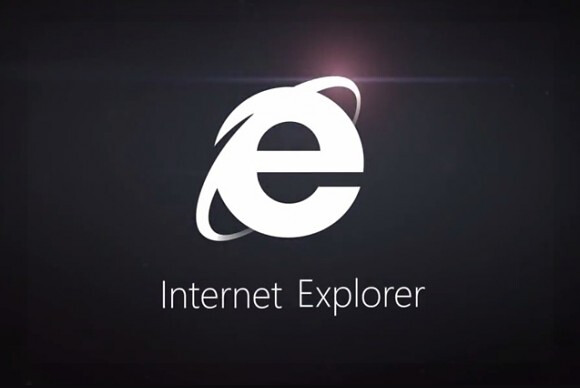

BROWSER WARS
- In 1993, Mark Anderson (Founder, MOSAIC) launched and tested MOSAIC with 12 people.
- In February 1994, they took a plane to Illinois in order to form a team to expand their business and to
have a free web browser for all.\
- In the Summer of 1994, Jim Clarke and his team developed NetScape in a few months. It was better than
MOSAIC and they knew they had to improve their browser to make it better and more compelling.
- On 13th October 1994, ‘Navigator’ browser was launched by NetScape. It got millions of downloads.
Microsoft realised that they were not the only giants in the IT industry anymore.
Bill Gates was shook by NetScape’s success and sent out a memo called ‘Internet Tidal Wave’ where he
declared that the Web is the single most important component and that they had to match the level of
NetScape or get better and beat NetScape.
- By 1995, the Internet was a global phenomenon. NetScape started expanding their business.
They fired Gary Reback, an antitrust lawyer who worked and fought for companies in the Silicon Valley,
such as Microsoft.
- Microsoft arranged a meeting with NetScape and offered them 1M$ to buy NetScape or else they told them
that they would copy their idea regardless, so might as well make money out of it but this was against
the law so NetScape asked Reback to sue Microsoft, who felt that this was just a huge setup by NetScape.
- NetScape wanted to go public with an IPO but Wall Street had only allowed companies with at least 2
years business experience period whereas NetScape only had 1 year of this experience. However, on the
day of the IPO release, their stocks went through the roof. They had invested 5M$ which on the day of
the IPO release went up to 663M$.
- On December 7 1995, Microsoft let the world know that they were not done yet with the release of the
Internet Explorer in order to beat NetScape. In 1995 people referred to the browser as NetScape but this
was about to change. NetScape was in trouble as Microsoft had better salesmen and better marketing teams
which were their hidden weapons. Their salesmen convinced people to not install anything other than
Internet Explorer.
